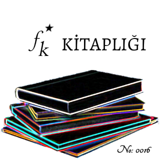

Kitap Adı: Artemis Fowl 2 - Kuzey Kutbu Macerası
Kitap Yazarı: Eoin Colfer
Çevirmen: Aylin Yengin*
Yayınevi: Artemis
Sayfa Sayısı: 293 sayfa*
Basım Yılı: 2003*
Tarayan: Bilinmiyor
Düzenleyen: FK Kitaplığı
*Bilgiler d&r’dan alınmıştır.